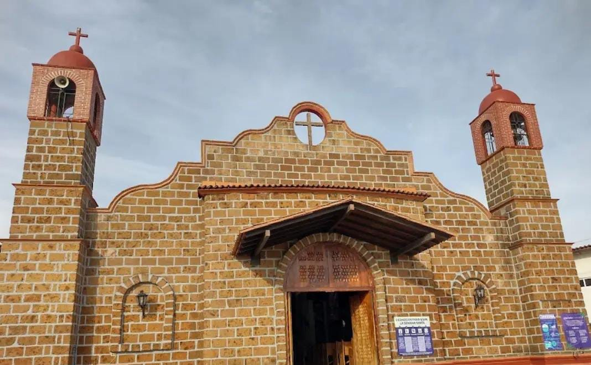
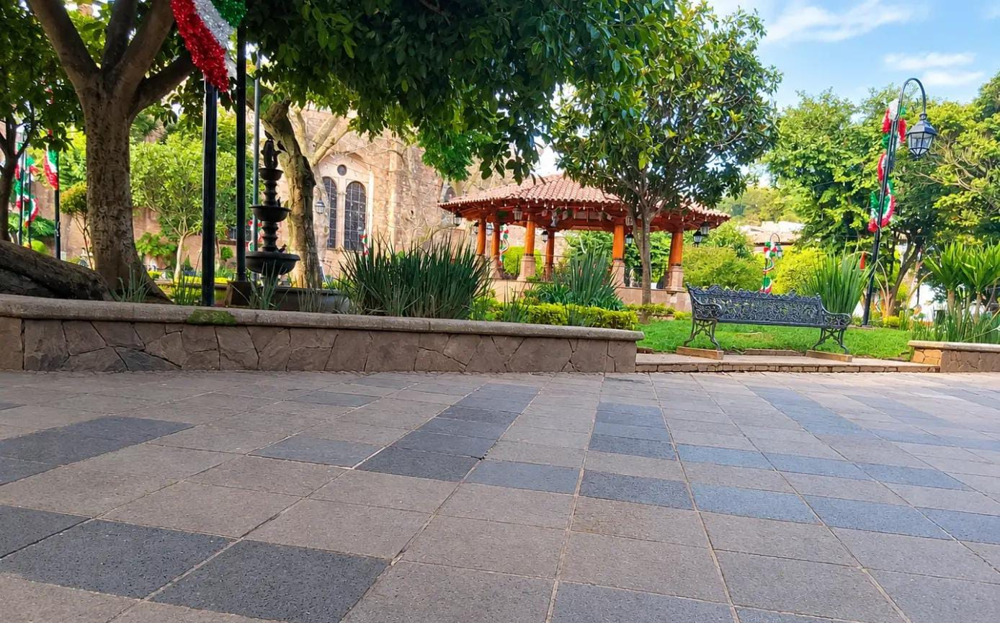
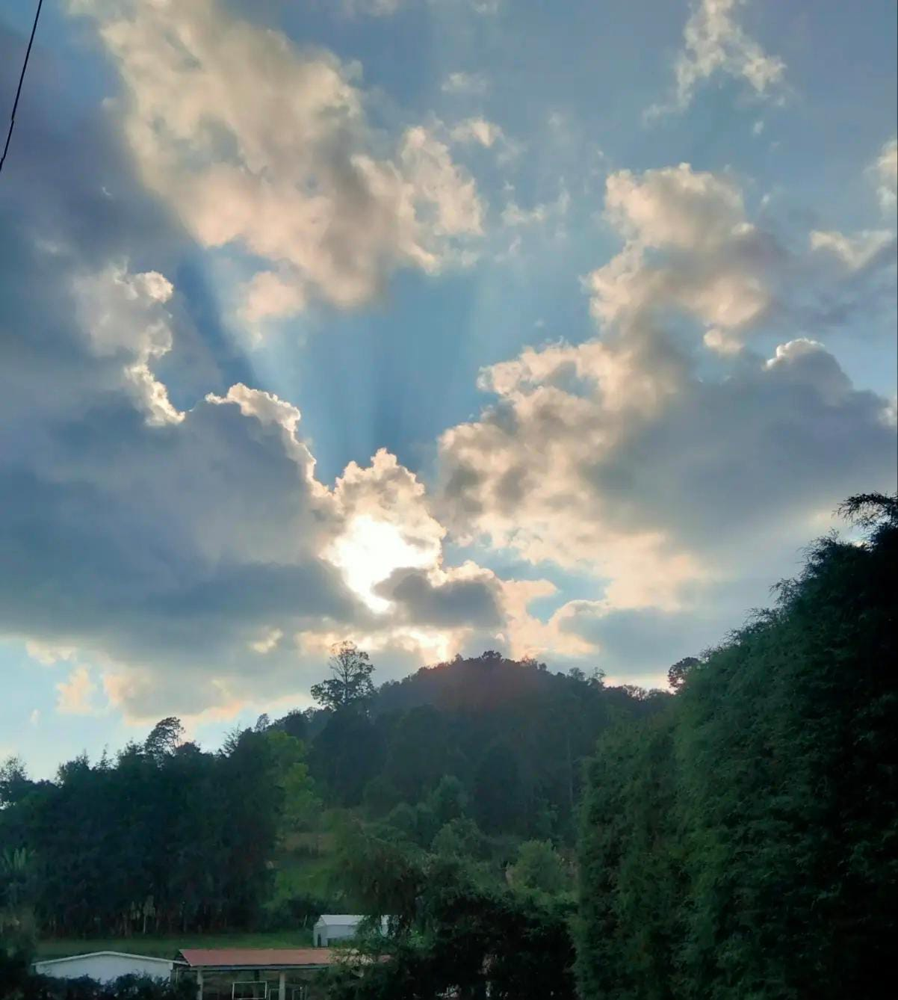
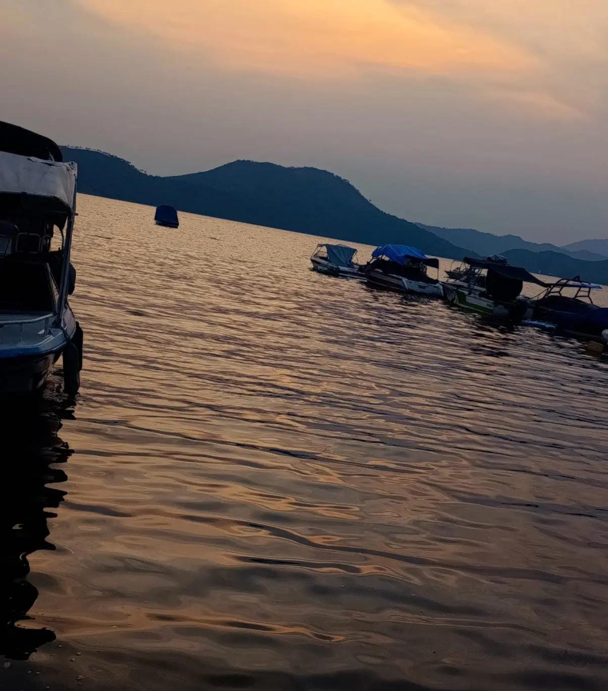
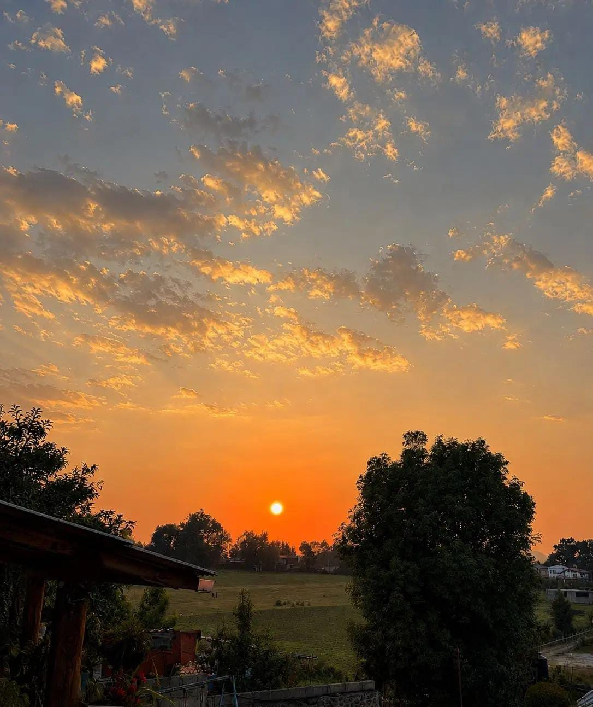

Rinconcitos que puedes visitar.
DIRECCIÓN: Sobre el camino principal a Cuadrilla de Dolores, pasando Palito Verde, antes de llegar a Valle Santana.

DIRECCIÓN: Av. Principal, Cerro Colorado, Valle de Bravo, EdoMex.

DIRECCIÓN: Av. Juárez con Independencia, Centro, 51200 Valle de Bravo, EdoMex.

DIRECCIÓN:Fraccionamiento privado que está sobre el camino a Cuadrilla de Dolores, entre Palito Verde y Valle Santana.

DIRECCIÓN: Fray Gregorio Jiménez de La Cuenca s/n, Valle de Bravo, 51200.

DIRECCIÓN: MZ 024, Palito Verde, Cuadrilla de Dolores, Valle de Bravo, Estado de México.
GASTRONOMIA